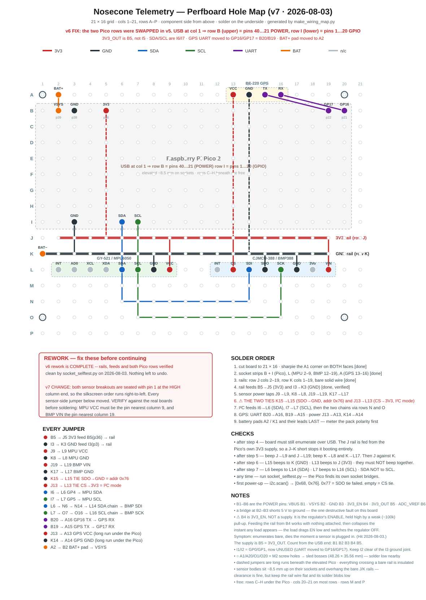
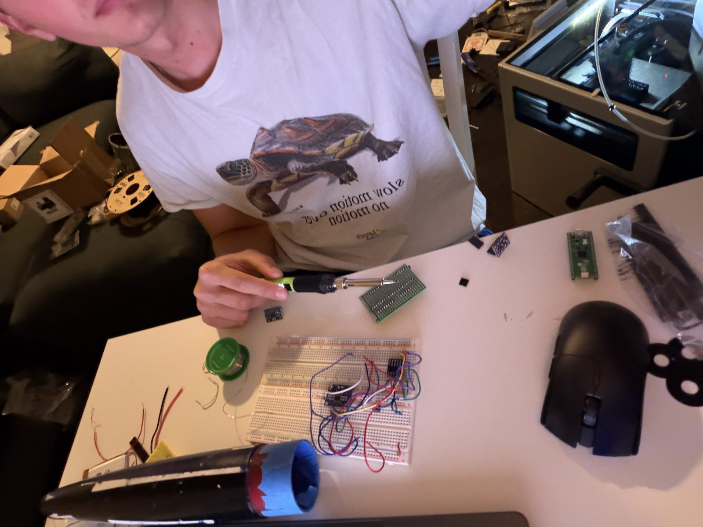
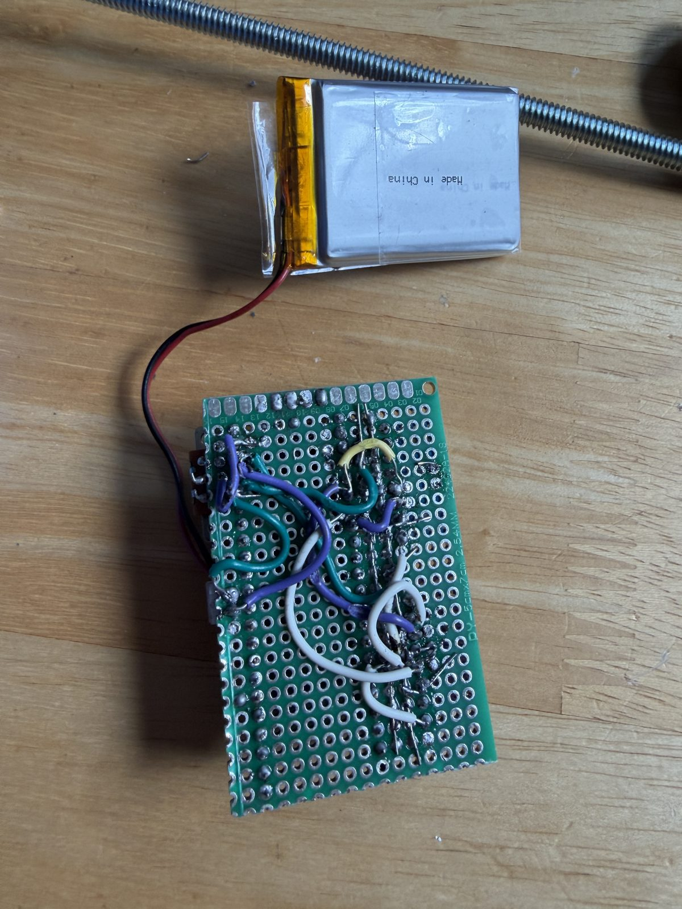
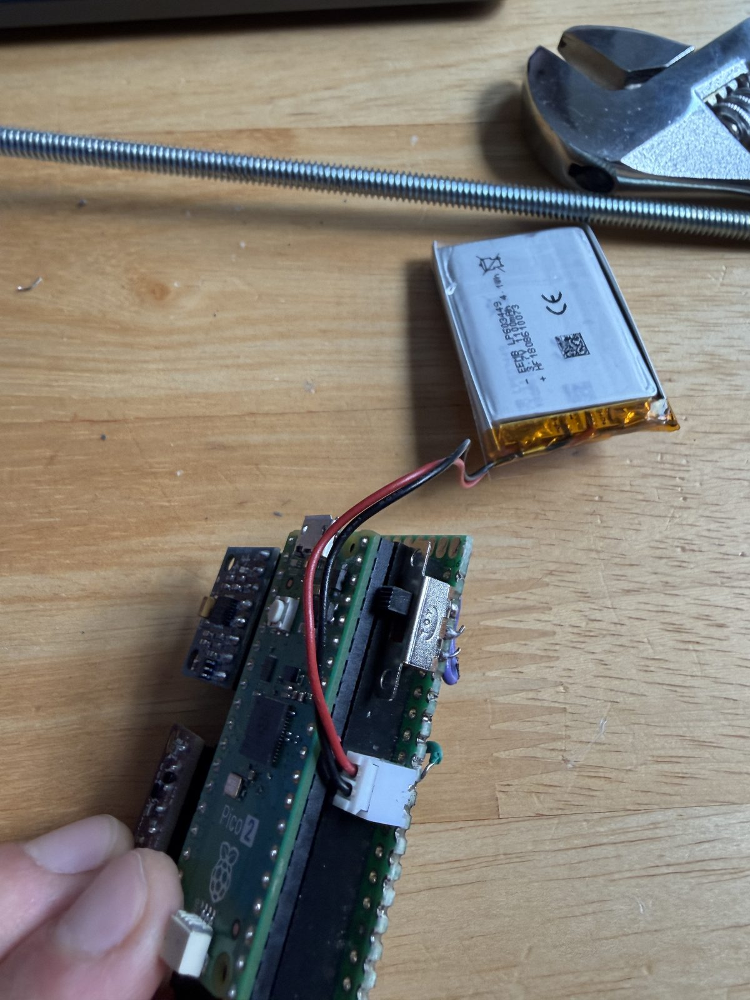
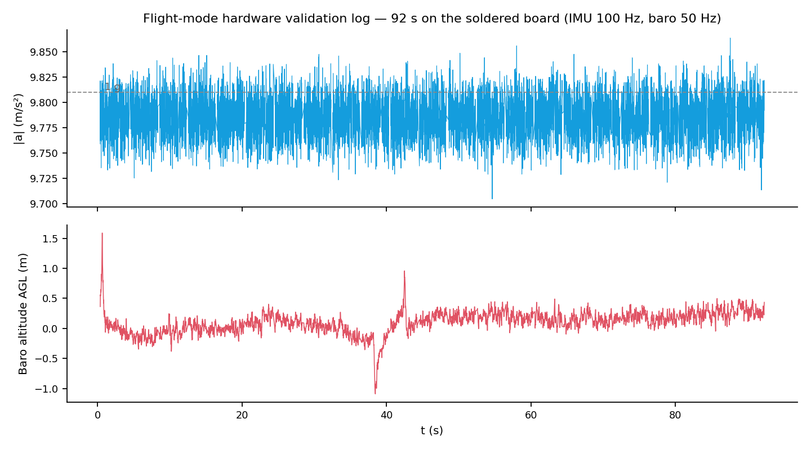
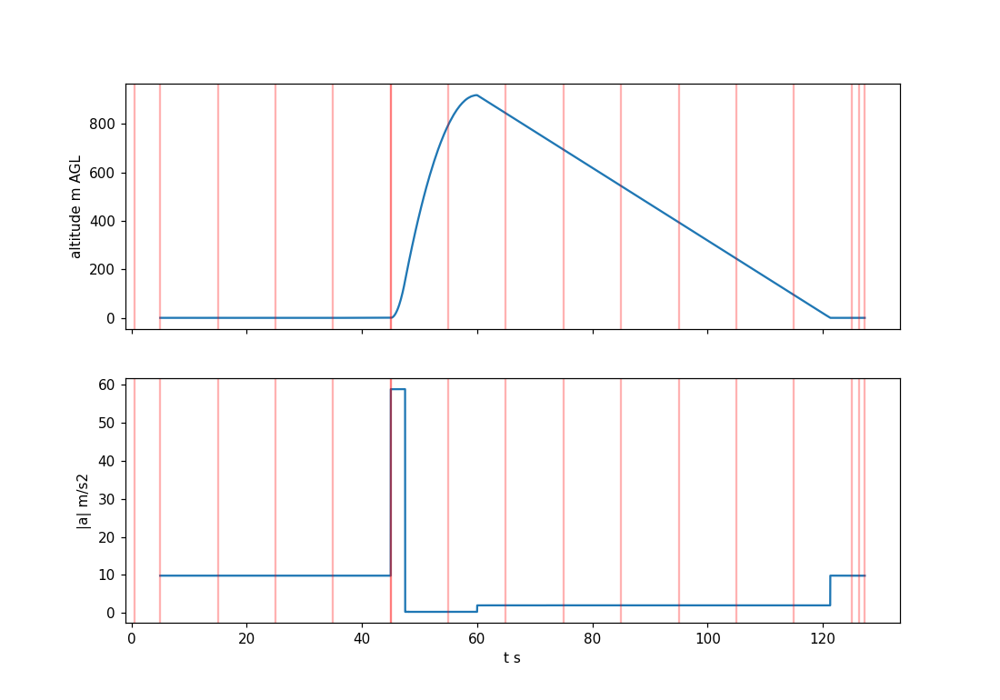
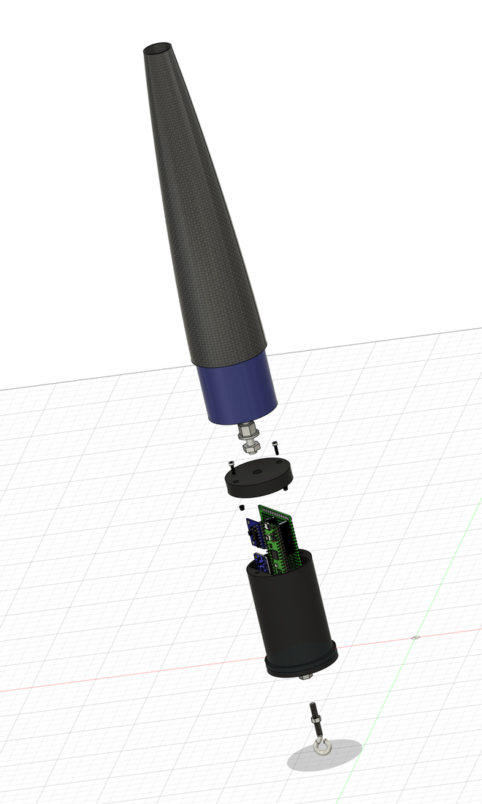
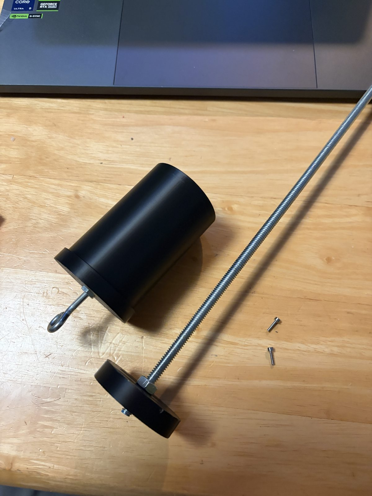
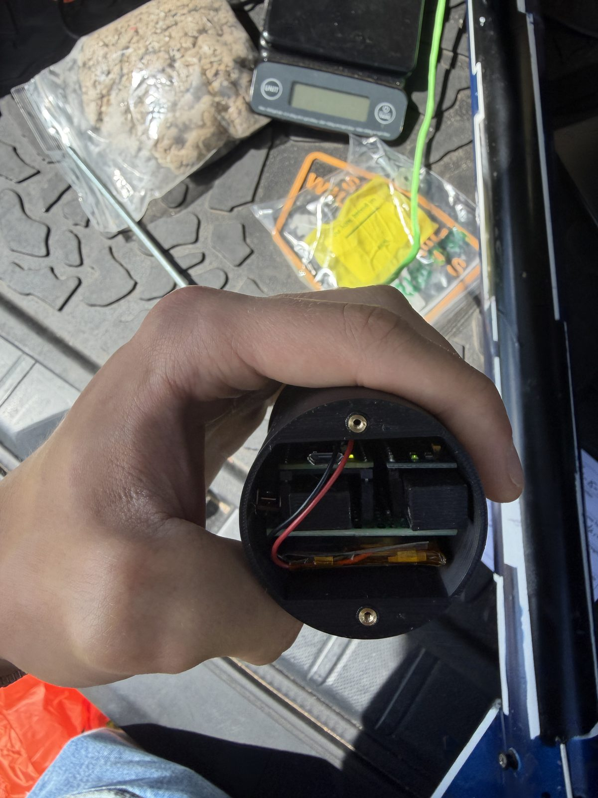

Flight Telemetry Computer
Personal Project · Jul – Aug 2026

{kind=link}
The soldered flight board with both sensors socketed, and the hardware-validation session over the USB console.
Overview
I built a flight computer from scratch so my rocket’s top speed and apogee would come from measurement rather than simulation: a Raspberry Pi Pico 2 with an IMU and a barometer, hand-soldered on perfboard, logging to onboard flash. Over this project I:
- Generated the perfboard wiring map from a self-checking Python script
- Soldered the board and worked each bring-up bug to root cause
- Calibrated the accelerometer with a tilt-immune six-position solve
- Wrote and validated the flight firmware and log decoder
- Designed the printed housing that carries the recovery load path
- Flew it twice
Goals & Requirements
- Log 100 Hz IMU and 50 Hz barometer data to onboard flash with zero sample skips
- Measure apogee barometrically and top speed by integrating boost acceleration
- Calibrate the accelerometer scale so it stops dominating the top-speed error budget
- Survive an unlimited pad wait without exhausting flash, and a hard landing without losing data
- Run self-contained on battery in the nosecone bay
Design & Build
Each quantity got the sensor that measures it best: the BMP388 barometer at 50 Hz for apogee (~0.13 m bench resolution), the MPU6050 accelerometer at 100 Hz for top speed over the ~2 s boost, and GPS parked as a recovery aid only.
The script emits the perfboard layout as SVG and cross-checks every hole against an independently derived pinout. The build still took three bench-caught corrections, the worst being the 3.3 V rail fed from the regulator’s 3V3_EN enable pin instead of its output. That board enumerated perfectly bare but died whenever a sensor drew current; the fix traced to the pin function in the datasheet. A first continuity test also returned 676 false faults — the RP2350’s broken internal pull-downs (erratum E9), not solder; rewritten pull-ups-only, it passed on all 26 GPIO.
{kind=link}

Generated wiring map v7 — the version I soldered from
{kind=link}

Bring-up, one sensor at a time
{kind=link}

Solder side — point-to-point nets from the map
{kind=link}

1100 mAh pack, JST header, arming switch
I calibrated the accelerometer on the finished board, in its ±16 g flight range, with a six-position solve on the magnitude equation |(a − b)/s| = g, so hand-hold tilt drops out of the math. That put the scale factor at ~0.2% against the ±3% datasheet bound, cutting its top-speed error contribution from ~4.5 m/s to under 1 m/s.
The firmware is built around the failure modes: pre-launch samples circulate in a RAM ring so an unlimited pad wait costs no flash, and fsync every 4 s after boost bounds what a hard landing can lose. Validation ran in layers — a synthetic-flight regression the decoder solved within 0.4 m of the known apogee, a dry-run rate test that held 100/50 Hz with zero skips at 4.4 ms worst-case loop time, then a 92-second flight-mode log whose decode agreed with the sensor’s own compensation to −0.021 hPa.
{kind=link}

92 s hardware log — |a| at 100 Hz, baro at 50 Hz
{kind=link}

Synthetic regression — decoder vs. known truth
The printed housing carries the recovery load path — shock cord, eye bolt, base flange, lid screws, threaded rod into the nosecone tip — at a uniform SF ≈ 2 against the ~300 N deployment spike.
{kind=link}

Exploded assembly — the recovery load path
{kind=link}

Housing assembled
{kind=link}

Board stack seated, ready to close out
Outcomes
- Flew twice on 15 Aug 2026: 100/50 Hz held through boost both times, with in-flight pressure cross-checks of +0.274 and +0.022 hPa
- The ±16 g range held with margin — 6 g boost (2.7×) and flight 2’s 15.5 g deployment shock captured unclipped
- Zero I²C errors through flight 1’s ballistic ground impact; the log survived a post-landing filesystem corruption by raw-imaging and carving the flash
- Top v2 change: finalize the log file at LANDED, closing the post-landing commit window that caused the corruption
Scope note: flight 1’s ≥21 g landing figure is a floor, not a measurement — one axis clipped at the ±16 g ceiling.
This computer flew both flights of the campaign in the carbon nosecone it was built for.